There is something truly lovely about pulling out a stack of colored paper and watching your child's face light up with possibility. These easy paper craft ideas are designed for real life, meaning no special skills, no complicated tools, and no mountain of supplies to gather before you can start. Just paper, a few simple extras, and a little time together.
Whether you have a toddler who loves tearing and gluing or a six-year-old ready for something with a few more steps, this list has something for every age and every kind of afternoon. Each project on this list is genuinely low-mess and beginner-friendly, so you can relax and enjoy the moment instead of managing the chaos.
What You'll Need
Most of these easy paper craft ideas use the same small set of basic supplies, so one trip to grab materials covers nearly the whole list.
- Prang SunWorks Construction Paper, assorted colors, the backbone of almost every project here.
- Fiskars 5" Pointed-Tip Kids Scissors, safe and sharp enough for clean cuts through paper.
- Elmer's Disappearing Purple Glue Sticks, washable and mess-free, great for layering shapes.
- Crayola Ultra-Clean Washable Markers, perfect for adding faces, details, and decorations.
- DECORA Self-Adhesive Googly Eyes, these make any paper animal or creature instantly adorable.
- KTOJOY Wooden Craft Sticks, handy for wands, puppets, and handles.
- Tape or a stapler, useful for joining edges and 3D shapes.
- String or yarn, needed for mobiles and hanging decorations.
20 Easy Paper Craft Ideas to Make with Your Kids
1. Paper Accordion Fan
Take a full sheet of paper and fold it back and forth in small even pleats from one end to the other, then pinch the bottom and secure it with a rubber band or tape to make the fan handle. The finished fan actually works, which delights kids of all ages. You can decorate the paper with stripes or dots before folding for extra color. This is one of the most satisfying easy paper craft ideas because the fanning motion gives an instant and very tangible payoff.
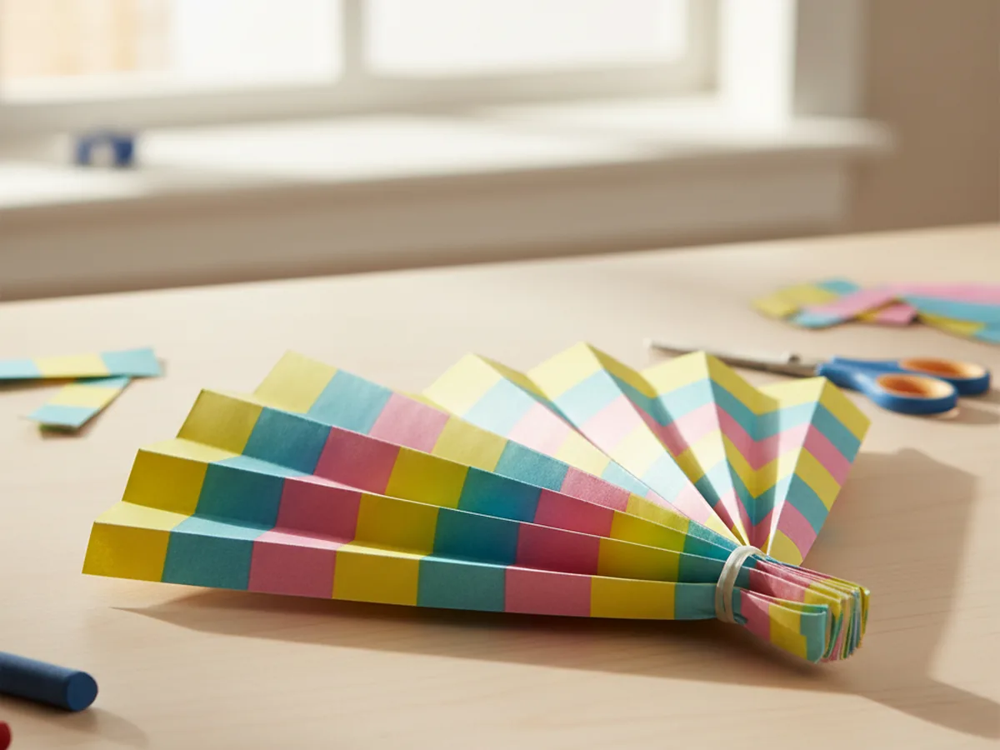
2. Paper Chain Garland
Cut strips of paper about an inch wide and link them into loops by gluing or stapling the ends together, threading each new loop through the last before closing it. Use alternating colors for a cheerful striped effect or let your child choose their own color pattern for every ring. These garlands are wonderful for decorating a bedroom, a party table, or a doorway. As easy paper craft ideas go, this one is incredibly forgiving for little hands and feels like a real team project when you make it together. 🎉
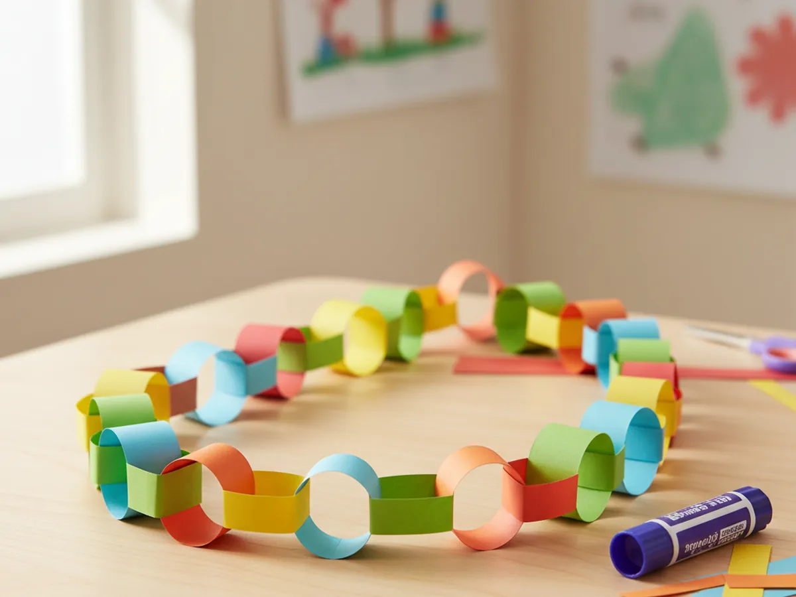
3. Paper Pinwheel
Cut a square of paper and make diagonal cuts from each corner toward the center, stopping about an inch from the middle. Fold every other point toward the center and secure them all with a brad or a pin pushed through a straw or pencil eraser. The finished pinwheel spins beautifully in a breeze, and kids will run around trying to make it turn as fast as possible. This is one of those easy paper craft ideas that doubles as an outdoor toy the moment it is finished. 🌀
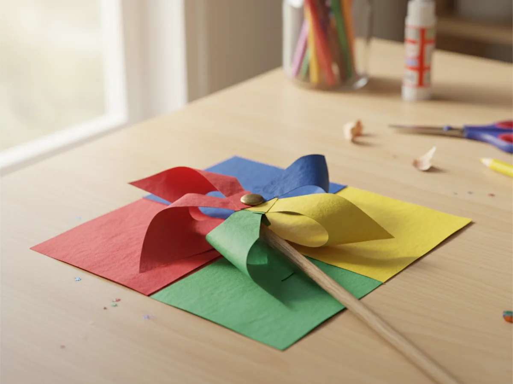
4. Paper Bunny
Cut a large circle for the body and a smaller circle for the head from white or pastel paper. Add two long oval ear shapes, a small pink inner ear, a tiny cotton-ball or paper dot nose, and two googly eyes. Use a marker to draw a smile and whiskers, and glue a small white pom-pom or paper circle for the tail. This easy paper craft idea works beautifully year-round and is especially sweet to make around springtime when bunnies feel perfectly at home.
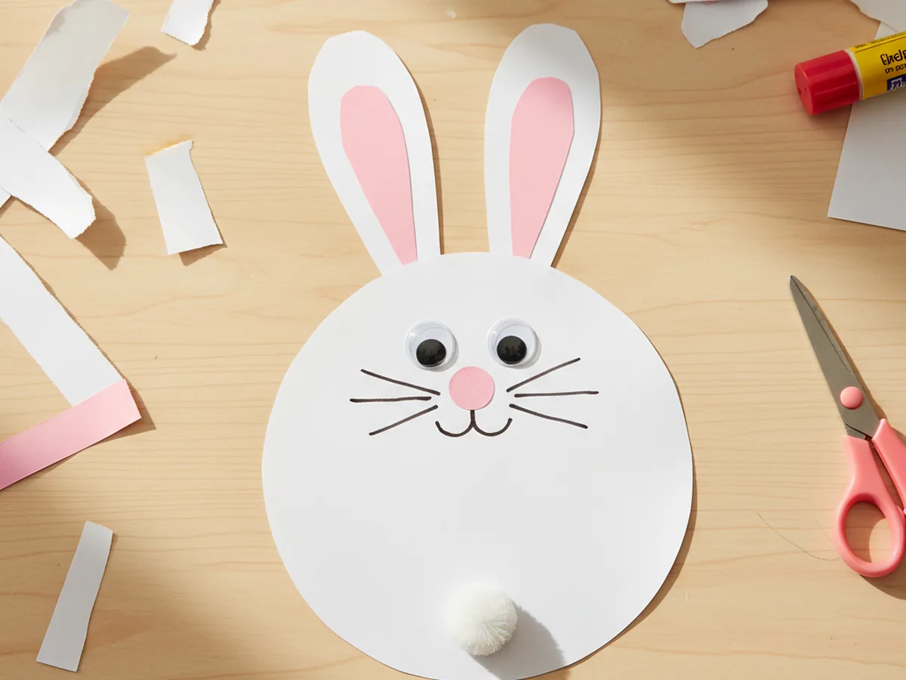
5. Paper Elephant
Cut a large rounded body shape and a smaller circular head from grey paper, then cut a long slightly curved trunk and two large rounded ears. Add a small tail from a thin paper strip and two white paper tusk shapes. Attach googly eyes and draw small toe lines at the feet with a marker. Elephants are a perennial favorite among animal-themed easy paper craft ideas, and the trunk shape always gets a big smile when kids realize what they have made.
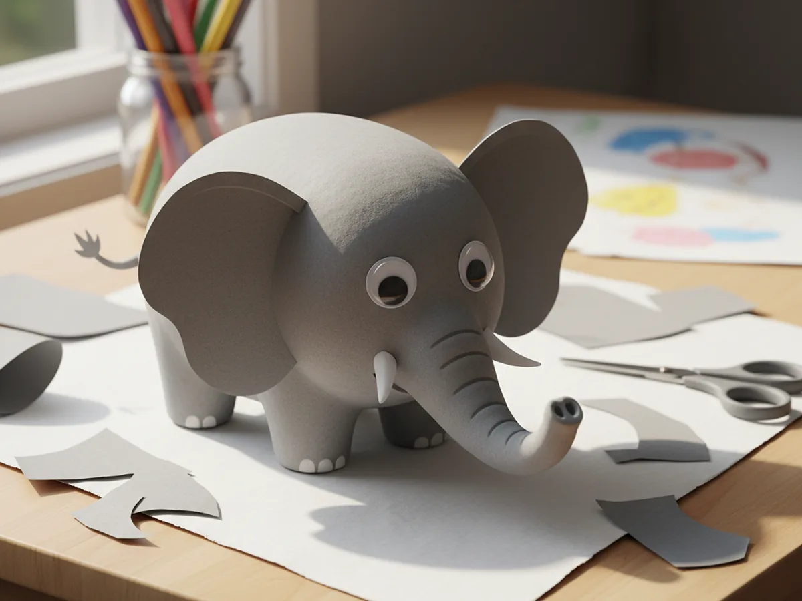
6. Paper Octopus
Cut a large circle for the octopus head, then cut eight long strips of paper for the arms and accordion-fold or curl them around a pencil before gluing them evenly around the bottom edge of the head. Add two big googly eyes and marker dots for suction marks along each arm. The dangly arms give this craft a lovely sense of movement. Among colorful ocean-themed easy paper craft ideas, the octopus is one of the most popular with younger children because it is easy to assemble and the result is genuinely funny and charming.
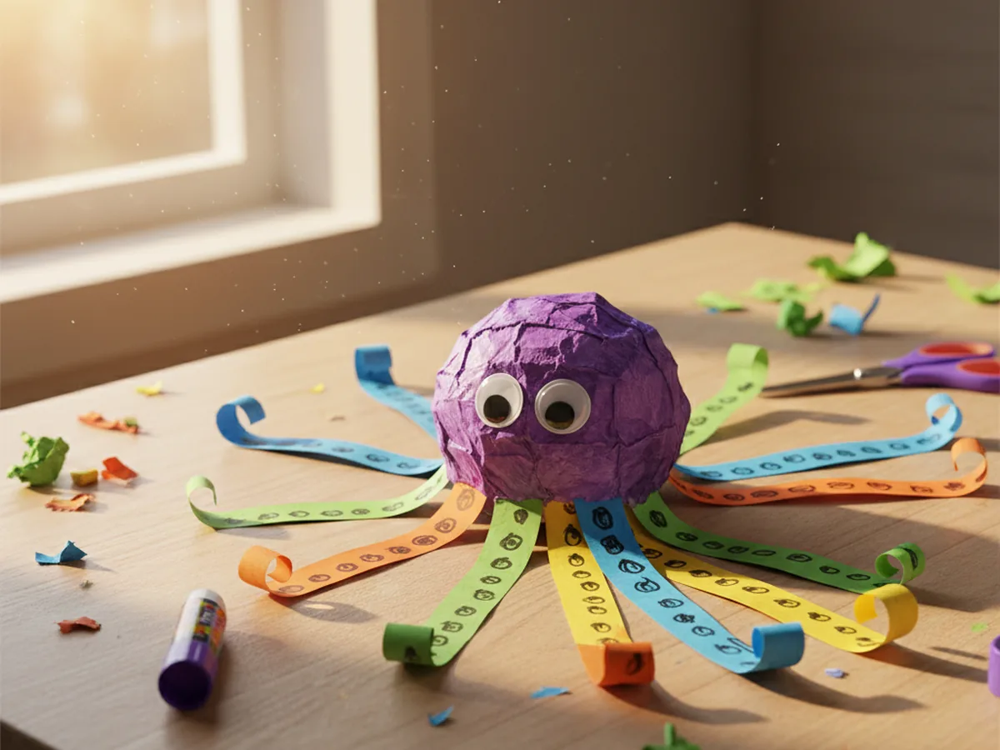
7. Paper Fox
Cut a large orange triangle for the fox body, a smaller orange circle for the head, two pointed ear triangles, and a large fluffy white tail shape with an orange base. Add white paper details for the chest and muzzle, two small black triangle ears-within-ears, a black oval nose, and a pair of googly eyes. The fox is a warm and stylish addition to any collection of easy paper craft ideas and looks especially sweet displayed on a windowsill or gift-wrapped as a card for someone special.
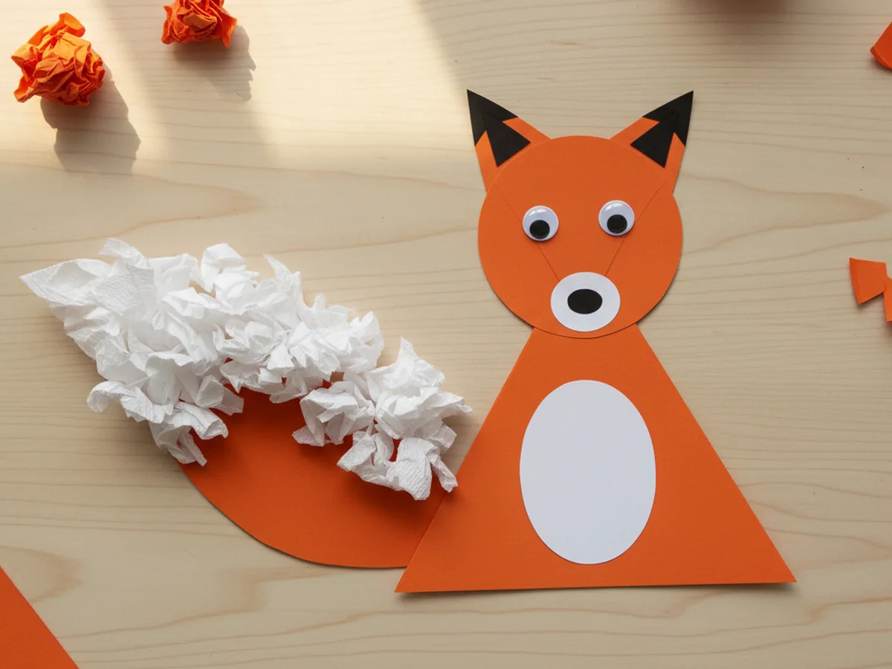
8. Paper Rocket
Roll a rectangle of red or silver paper into a cylinder and secure it with tape, then cut two triangles for fins and attach them at the base by slitting the cylinder slightly and slipping the tab in. Add a cone-shaped nose from a small circle folded into a cone and tape it to the top. Flame shapes cut from orange and yellow paper tuck into the base. Rocket crafts are a guaranteed hit with kids who love space, and this is one of the most fun easy paper craft ideas for encouraging imaginative play after the craft is done. 🚀
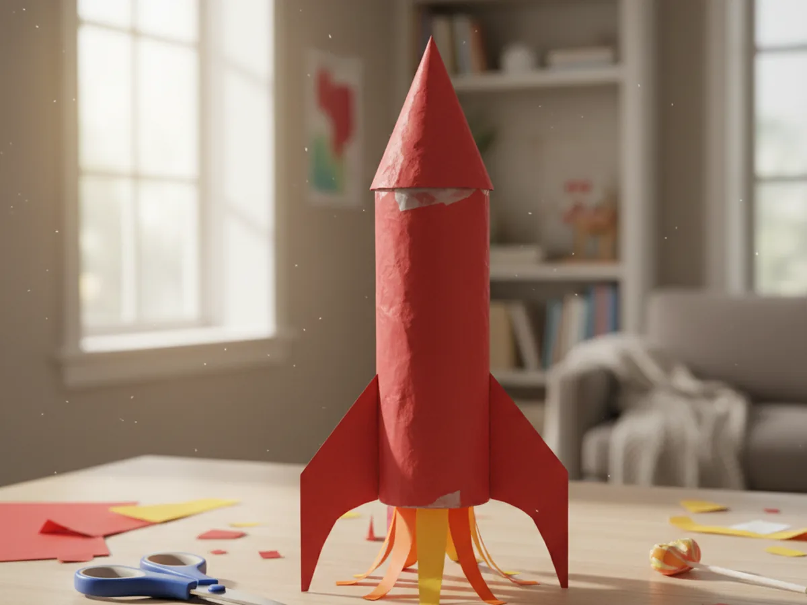
9. Paper Tree
Stack three triangles of green paper in graduated sizes, placing the largest at the bottom and the smallest at the top, and glue them in a layered Christmas-tree shape onto a brown rectangle trunk. Decorate with small circle dot ornaments cut from bright paper or drawn on with markers. This simple layered tree is one of the easiest and most satisfying easy paper craft ideas for younger children, and the finished piece looks neat enough to hang as decoration any time of year.
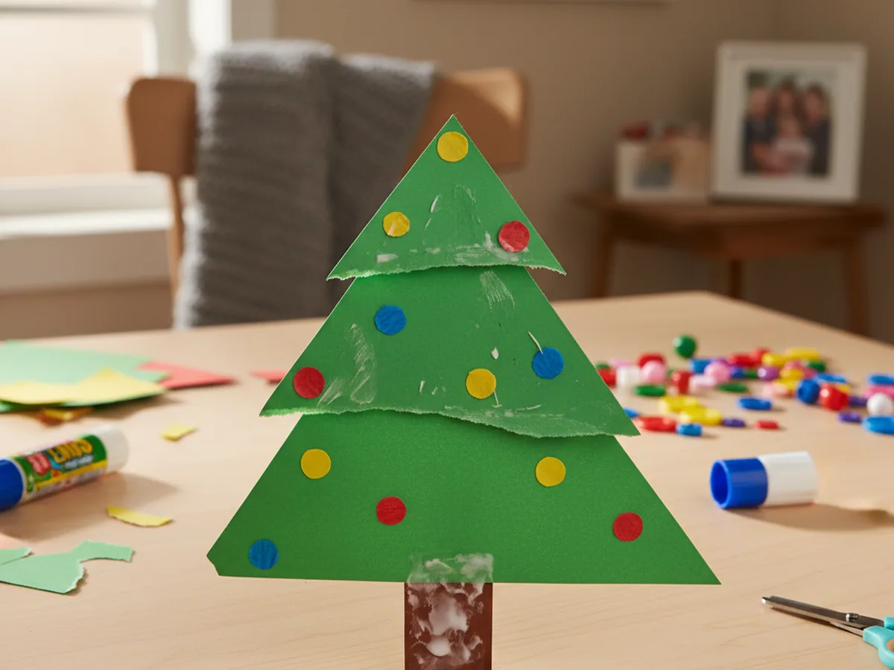
10. Paper Lion
Cut a large yellow circle for the lion's face and surround it with an overlapping ring of short orange and yellow paper strip segments to create the mane. Add two small round ears at the top, googly eyes, a brown oval nose, and a bold marker-drawn smile with tiny whisker lines. Standing up the finished lion with a folded paper tab at the back turns this easy project into a small display figure. Among colorful jungle-themed easy paper craft ideas, the paper lion is one that kids revisit again and again once they know how to make it.
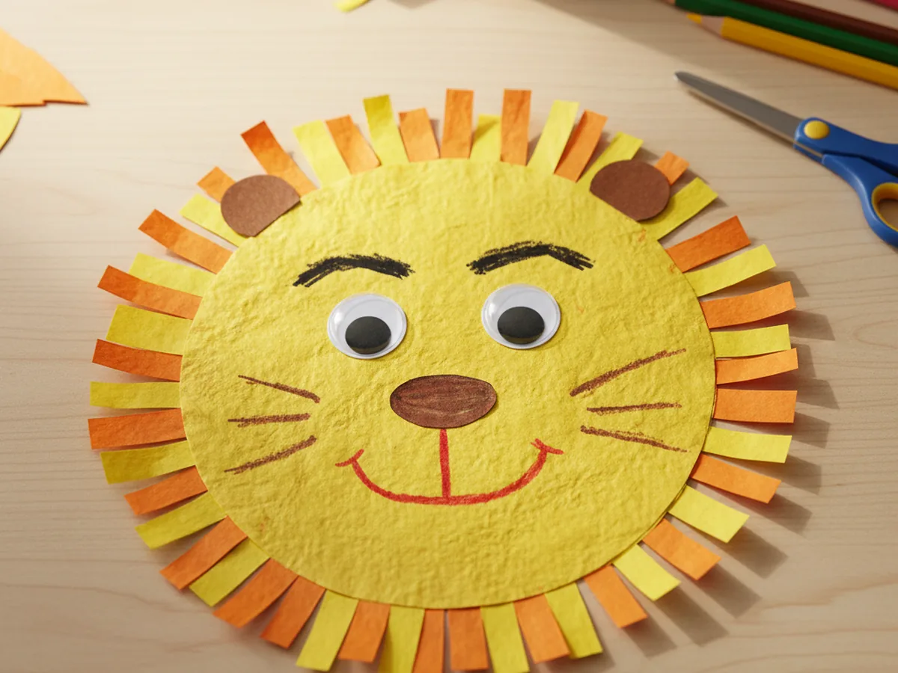
11. Paper Ice Cream Cone
Cut a large scoop shape from pastel pink, mint, or lavender paper and a pointed cone triangle from tan or brown paper, then layer them to assemble the ice cream look. Add a small red paper cherry circle on top, waffle-grid marker lines on the cone, and small dot sprinkles across the scoop in bright colors. This cheerful easy paper craft idea is perfect for summer or any day your child is in the mood for something sweet-looking and fun to make. Hang a row of them on a string for an instant party decoration.
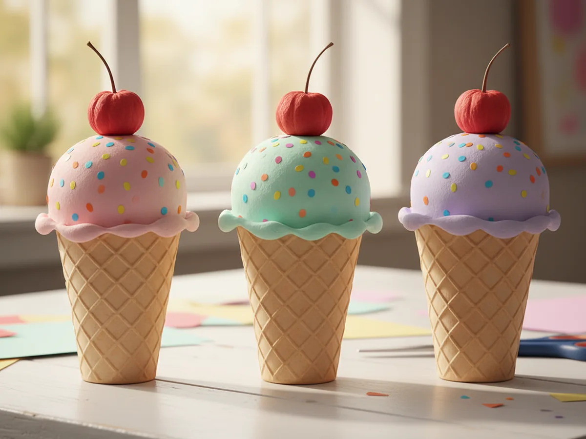
12. Paper Woven Placemat
Fold a rectangle of paper in half and cut parallel slits from the folded edge almost to the open edge, leaving a border uncut. Weave strips of contrasting paper in and out through those slits in an alternating over-under pattern to create a woven grid. Unfold and admire the interlocking pattern. This is one of those easy paper craft ideas that teaches a real skill while producing something genuinely useful, and older kids feel especially proud when they realize they have made something functional.
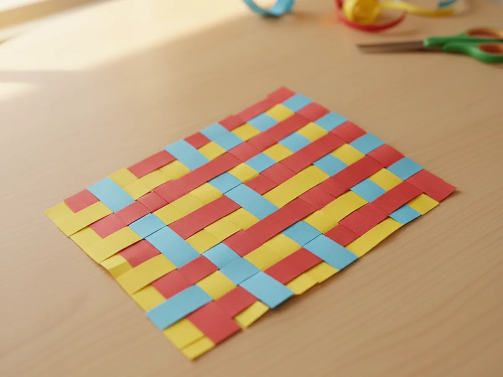
13. Paper Lantern
Roll a rectangle of paper into a tube without closing it, then cut parallel vertical slits partway up from the bottom edge to create the lantern panels that puff out when the tube is opened into a round shape. Add a folded paper handle across the top. The finished lantern looks lovely backlit near a window or hung from a string. This classic among easy paper craft ideas has been done in classrooms for generations and it still works every single time.
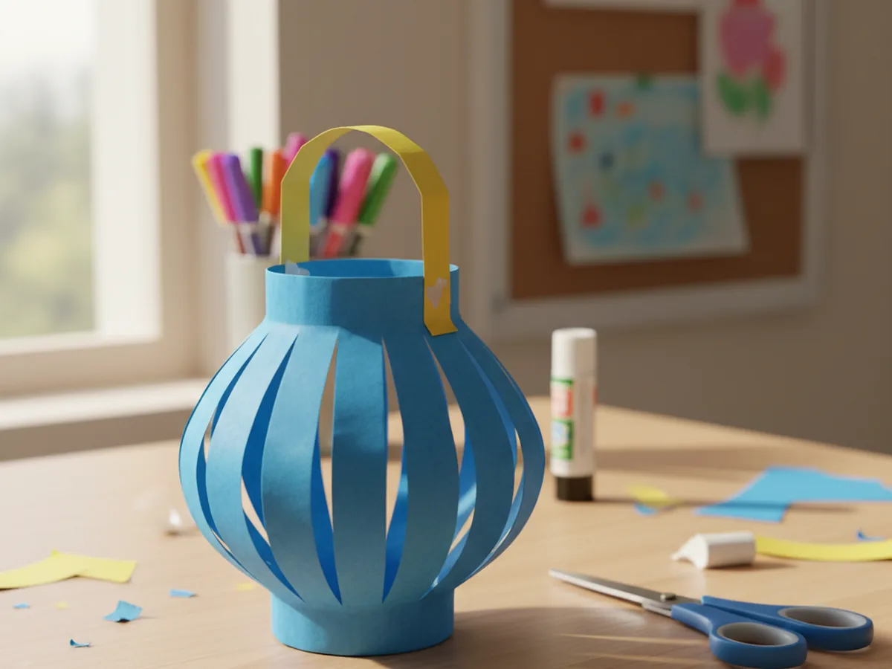
14. Paper Penguin
Cut a large oval from black paper for the penguin body and a smaller white oval for the belly, then add two small black wing shapes on the sides. Cut an orange beak triangle and two small orange feet to tuck under the base. Add two googly eyes and the little penguin is ready. This is one of the most reliably adorable easy paper craft ideas on this list, and kids love giving their penguins slightly different expressions or accessories to tell them apart from one another.
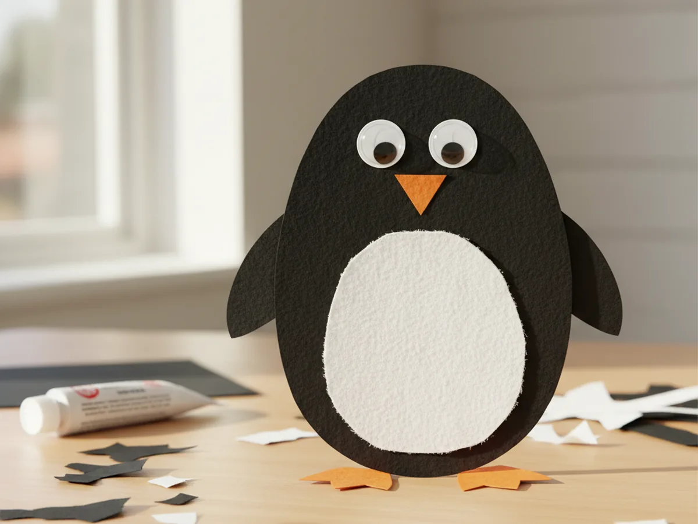
15. Paper Heart Mobile
Cut hearts in three or four graduated sizes from different shades of red, pink, and coral paper and stack them largest to smallest, gluing them through a central hole onto a length of string. Make four or five of these strings and hang them from a small twig or a dowel for a beautiful dangling mobile. This is a genuinely pretty easy paper craft idea that works beautifully year-round and looks especially sweet hanging in a child's bedroom or near a window where it can catch the light. ❤️
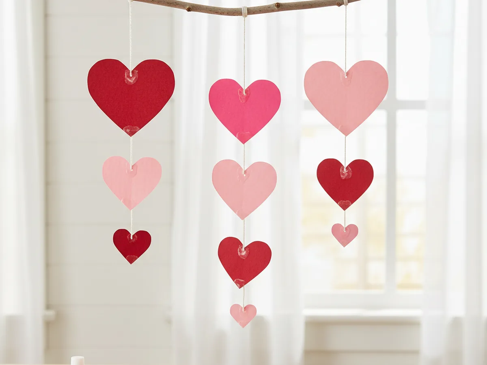
16. Paper Origami Star
Cut a long thin strip of paper and knot it loosely near one end, then gently flatten the knot into a pentagon shape. Fold the remaining tail strip back and forth around the pentagon, tucking the final end neatly inside. Press lightly from the sides to puff the five points of the star outward into a raised 3D shape. These lucky stars are addictive to make once kids learn the technique, and this is one of those easy paper craft ideas that becomes a satisfying repetitive activity kids return to independently.
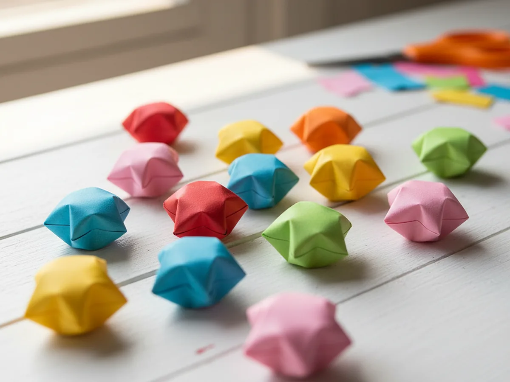
17. Paper Hedgehog
Cut a round brown body shape and a lighter brown oval for the hedgehog face. Cut many small narrow triangles from darker brown paper and glue them covering the top and back of the body as spines, slightly overlapping in rows. Add a small black oval nose and two googly eyes on the face. The finished hedgehog looks endearingly round and prickly. This is one of the most charming creature-themed easy paper craft ideas and the spine-laying step is great for developing patience and fine motor focus in young kids.
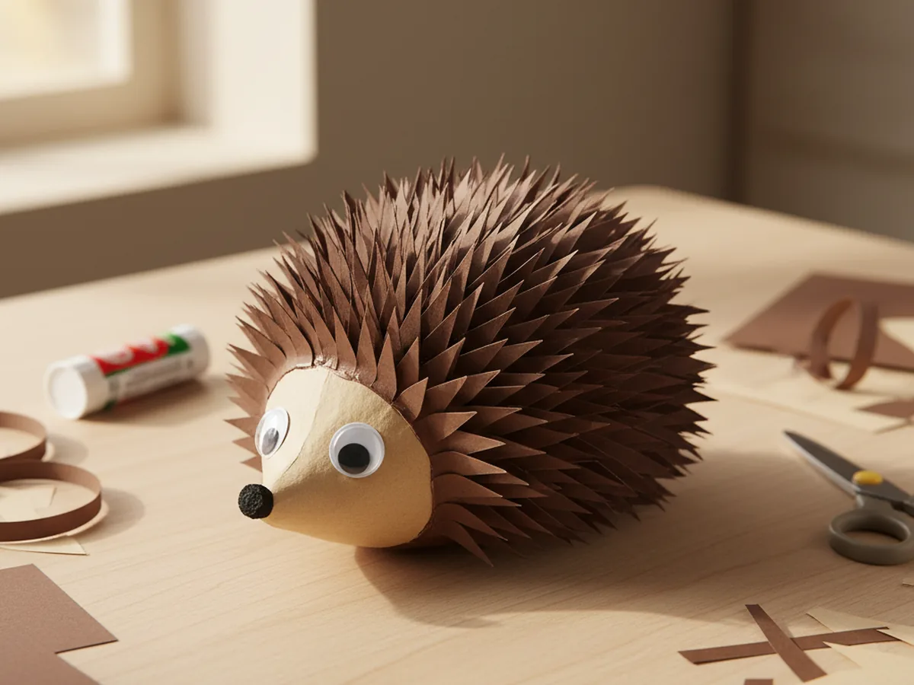
18. Paper Dragonfly
Accordion-fold two rectangles of paper for the four wings, then pinch and secure each pair at the center. Attach both sets of wings to a long thin cylinder body rolled from green or blue paper, and add two googly eyes to one end for the head. The wings fan out naturally on both sides giving the dragonfly a realistic silhouette. Hung from a string near a window, this becomes one of those truly decorative easy paper craft ideas that looks too pretty to put away once it is made.
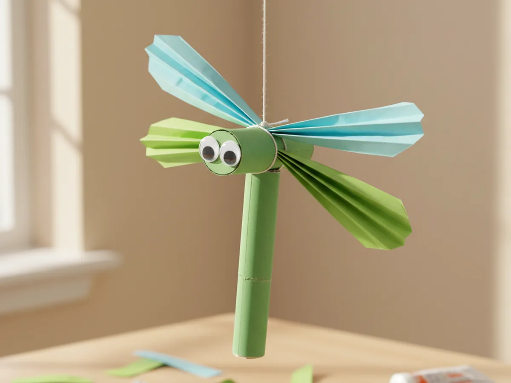
19. Paper Bag Puppet
Open a small paper lunch bag and fold the bottom flap to form the mouth, then draw or glue on eyes, a nose, and hair to bring a character to life. Slip your hand inside with fingers in the folded flap and your puppet can open and close its mouth as it talks. Kids can make a whole cast of characters and put on a puppet show. This is one of the most versatile easy paper craft ideas because there are no limits on the character your child chooses, from a friendly bear to a fierce dragon to a favorite storybook character.
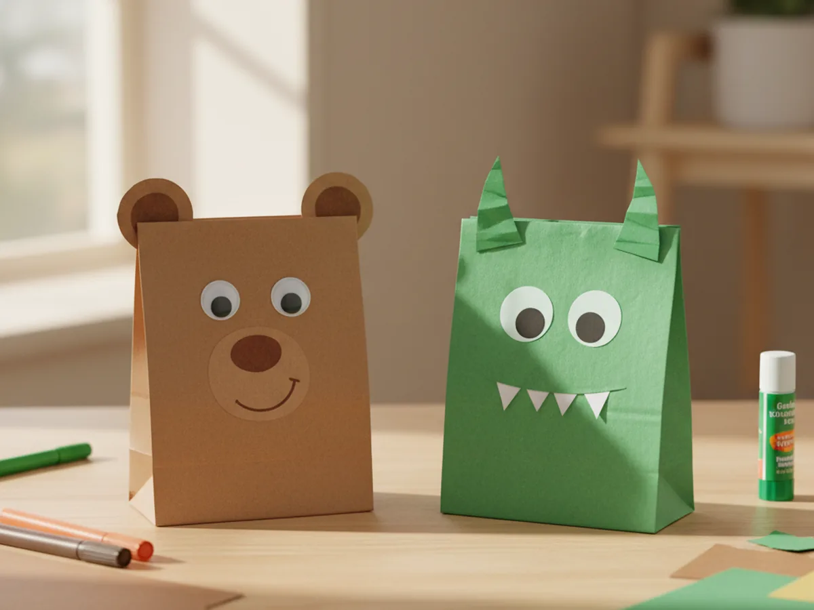
20. Paper Windmill
Cut a square of paper and divide it diagonally into four triangles without cutting all the way to the center. Fold every other point toward the middle and secure all four with a brad pushed through a straw so the windmill can actually spin when you blow on it. Decorate the blades in contrasting colors before assembling for the most visual impact. This is a wonderful closing project for any afternoon of easy paper craft ideas because it produces something interactive that kids want to test and show off right away.
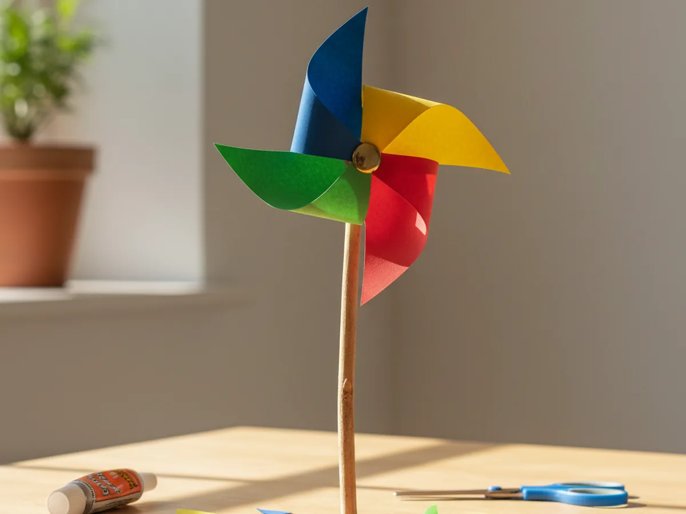
Final Thoughts
Plain paper is one of the most underrated craft supplies in the world. With a pair of scissors, a glue stick, and a few colored sheets, you can make animals, toys, decorations, garlands, and gifts together without any special preparation. These easy paper craft ideas are all designed to fit into a real afternoon without stress, without mess, and without any need for Pinterest-perfect results.
Pick one that catches your eye, pull out the paper, and just start. The best craft is always the one you actually sit down and do together. 🌟
More Crafts You'll Love
If you are looking for even more ways to create with paper, these two articles have plenty more to explore.
Happy crafting with your little one!